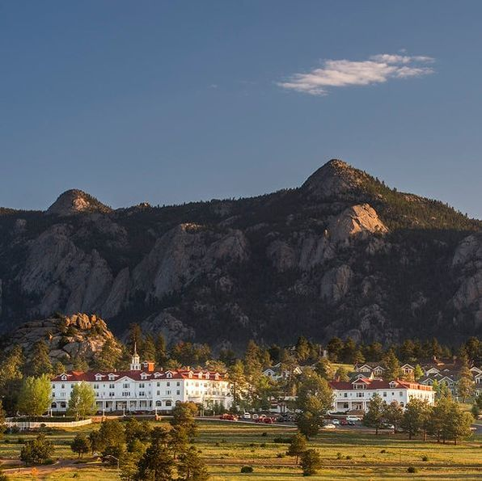
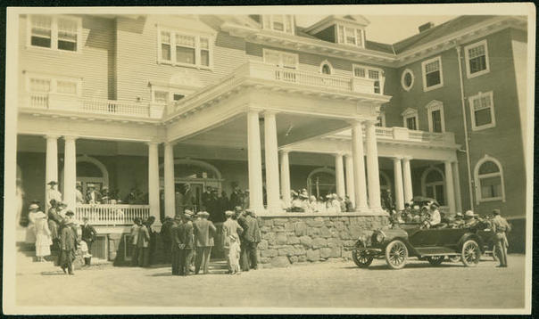
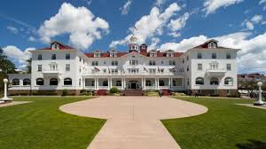
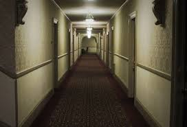

The Stanley Hotel is listed on the National
Register of Historic Places and is famous
for its old wooden charm.
It is located in Estes Park, Colorado.
The hotel offers many different packages with
different rates to ensure that you have a great stay.
The horror novel, "The Shining" was written by
Stephen King when he was staying at this hotel.
What makes the Stanley Hotel so scary?
The hotel was opened in 1909 by the couple, F.O. and
Flora Stanley. It was originally opened to be a secluded,
grand mountain restort. The Stanleys have passes but
many believe that they never actually left. There have
been many haunted events that have caused people to believe
this. In 1911, a housekeeper was electrocuted during a lightening
storm in room 217. She was not killed but that room has become
a center of paranormal activity. The hotel is considered one
of the scariest places in the US. The novel, The
Shinning was inspired by the events that Stephen
King experienced when he stayed at the hotel. For $50 you
are able to take part in a 5-hour ghost hunt at the hotel
led by a paranormal investigator.
The Hotel is Near...
The Stanley Hotel is only an hour away from
Denver, Colorado.
In Estes Park, the Rocky Mountain National Park has
trails to hike/bike, and you can enjoy the beautiful
sights that the park has to offer.
There is a Mountain Blown Glass studio and gallery
which could be a fun activity if you are into arts. You can
even take home a piece of glass that you watched being made!
In Estes Park, there is an Aerial Tramway that is a great
thing to do with the family and to enjoy the amazing sights that
this location has to offer.
Pictures!!!

An overview image of the Stanley hotel.
You are able to see the beautiful mountains that are
located behing the hotel. From this view, the hotel is
such a gorgeous sight.

This image of the hotel is from an older period.
It shows how old the hotel is and how popular it has been
for many generations. You can see the old car in the
right of the picture which shows that this hotel is very
old and has been around for awhile.

This is a view of the hotel straight on. You are
able to see all of the pretty features that the hotel
has which make people want to go to this hotel. Just seeing this image
you would never think that this hotel is haunted.

This image of a hallway in the Stanley Hotel gives you
the feeling of what it could be like to stay in the hotel. This
view could make you feel uneasy and nervous but that is all in the joy
of staying at this hotel.
Reviews from people who have been here
before
"My family wanted to take a vacation this Halloween
and everyone is into haunted things. We figured that the Stanley
Hotel would be best for us so we took the challenge. Although we did
not stay in room 217, it was for sure a thrill. I would not recommend
for someone to stay at this hotel if they are afraid of their own shadow.
Our family did the ghost hunt which made it very difficult going to sleep
that night. I would definitely go back again and hopefully be able to stay
room 217."
My husband and I had begun to plan our honeymoon and we knew that we wanted
to do something different. We both LOVED haunted houses which is how we
met. Together we decided that it would be fun to put a twist on our honey moon
and to go to the Stanley Hotel. We were able to stay in room 217 which made our
stay so much more enjoyable... and scary. My husband and I did the 5-hour ghost
hunt. Although we could not let go of each other because we were so scared, it
was such a good experience. While the hotel was very scary to stay at the sights
around the area in Estes Park were gorgeous. All in all, my husband and I had a great
stay and would be sure to go back again in the future.
Click this link to find out more about
the Stanley Hotel: